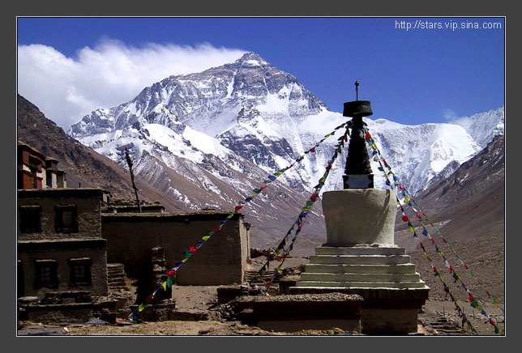
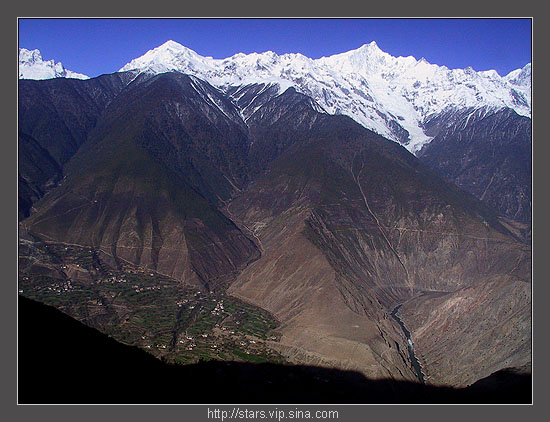
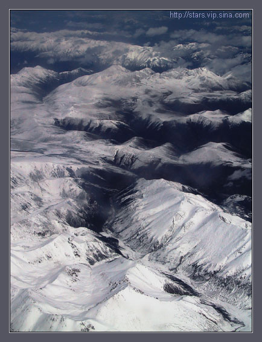

|
| |
| 杨飞摄影首页
/
写作与出版 /
写作 /
在 云 南 和 西 藏 的 日 子 photographic works from yunnan & tibet | |
|
第五部分 | |
|
西藏印象（36）Let's take a closer look of the Everest and Rong-bu Monastery. 摄于2002年4月18日，CANON G1数码机， RAW格式。 这是烈日下的珠穆朗玛峰。前景是戎布寺，此处海拔5100米，离珠峰大本营约8公里。左边的旗云非常壮观。旗云是高海拔雪山常见的现象，一般都在山峰的左侧。珠峰是世界最高峰，远看去确实有点摄人的气魄，但看起来还是没有梅里和冈仁波齐漂亮。 在西藏一个多月我两次来珠峰，这是第一次拍的。这一次运气不好， 这种烈日下的照片从摄影上来看无甚可看。当天我好不容易等到落日时刻，没想到一大朵云突然飘来把珠峰遮得严严实实，除了骂句TMD我又能做什么呢。
 不过，这天晚上却是一个非常难忘的晚上。我们一行是5个人，其中大夫是和一个女孩子一起的。从拉萨出来这一路上，我们都能看出大夫和这个女孩子慢慢的在好起来（顺便说一句，路上的爱情故事，长的也好，短的也好，都挺多的）。我们都是第一次见到珠峰，大家都很激动。通常第一次见到珠峰的人都这样，听说还有老外第一眼见到珠峰就脱光光在地上打滚呢。 到了晚上，我们一起侃大山，喝白酒，每人都表演一个节目，不会的就翻跟斗，拿大顶，兴奋的跟小孩似的。海拔5100米，我们没一个人有高原反应。老秦说：靠，这帮写攻略的家伙真该死，谁说到了高原要先好好休息， 我看来高原应先备白酒一瓶，呵呵。我突发奇想，和老郭老秦一商量，我们都觉得，要是大夫和小冯今天就能在这世界最高峰下结婚，那该是多么浪漫的一件事！我们做为主婚或证人也是幸福无比呀！ 旋即，我们开始轮番劝说他们两个。刚开始他们死不松口，说婚姻大事哪能这么就决定。后来我们穷追不舍，隔壁房深圳的老陈因为高原反应睡不着，听我们一说，也加入了说客的行列。软磨硬泡的，大夫看得出是真喜欢她，没多久就宣布投降，说只要小冯答应，他没意见。一直到半夜，在大家的轮番轰炸下，小冯都差点急哭了：你们别逼我了！再逼我一头晕 maybe 就来真的了！ 真的，我们都商量好了，只要他们同意，明天我们就去定日县城帮他们采购藏族的结婚礼服，然后立即上珠峰大本营举行仪式，即使晚回拉萨一两天也在所不惜。虽然最后没有成功，但是我相信这件事大家都不会忘记。因为大夫和小冯，包括我们，差一点就拥有了那样一个面对地球之颠的超级浪漫日子！
| |
|
| |
|
 上面是梅里雪山，左边是村庄，右下角是澜沧江。2002年4月6日上午9点，云南德钦，佳能G1数码照相机，RAW格式。 因为卷入了一场感情纠纷，从丽江中甸到德钦，我几乎称得上是仓惶出逃，素云小姐，once again 让我在这里说声 thank you so much. | |
| |
|
西藏印象（37）鬼湖。湖面也是冰封的。西藏三大圣湖之首是玛旁雍措，无数的人来膜拜它。这鬼湖叫拉昂措，和玛旁雍措仅是一石之隔，却基本上无人问津。鬼不鬼的我虽然从来不相信，不过，拍这张照片的时候天空的色调确是有些诡异的色彩，佳能G1数码照相机， super fine jpeg 格式，2002年5月1日下午5点，西藏阿里。 | |
| |
|
云南印象（18）老的小的，各有所思。这是松赞林寺念经的喇嘛。殿堂里不准摄影，这是偷拍的。寺庙室内极暗，我几乎把佳能G1数码照相机发挥到了极限，感光度从ISO50调到ISO100（G1的ISO200和400噪点太多，几乎不可以用），最大光圈F2.5，速度1/8秒，几乎也是我手持相机能端稳的极限，因为是偷拍，就别指望用三角架。上帝保佑，还算比较清楚，虽然有一点糊。2002年4月4日，云南中甸，佳能G1数码照相机，RAW格式，手动曝光。 | |
|
西藏印象（38）奔驰大卡。 2002年5月16日，离开拉萨的前一天，我在院子里踱着步，心情很不好，很多乱七八糟的事情都挤在一起。亚宾馆的院子里忽然如坦克压境般的轰隆作响，抬头一看，来了两辆大型军用卡车，仔细看，是奔驰牌的四轮驱动大卡，真TMD爽！ 这是东欧小国拉脱维亚的一帮年轻人举行的一个名叫“世界屋脊2002”（Roof of the world 2002）的长途汽车远征。当然，如此好的装备，巨大的开支，他们花了很多时间四处拉赞助，车身上贴满了广告。 他们的路线是：拉脱维亚 － 俄罗斯 － 哈萨克斯坦 － 中国 － 尼泊尔 － 拉脱维亚。有关这次远征的具体情况请看这个网站：http://www.mitc.lv/ 各位，这样的一次远征一直是我的梦想之一。这需要，首先，一笔巨大的费用，合适的人员，包括汽车技师，医生，翻译等。他们这次远征的队长本身就是奔驰公司的技术人员。我打算在 4 年之内实现这个跨越欧亚大陆，或者干脆环球一周的梦想。我的设想是两辆性能良好的越野车，6到8个人。 | |
|
云南印象（19）藏区很多地方都有旌幡阵，梅里雪山下的这个是我见过的最壮观的一个，简直多得让人心花怒放。这些小旗子上都密密麻麻的印满了藏文经书，是藏人的心愿的一种表达？般若菠萝密.:)) ？ 点击放大。 佳能G1数码照相机，RAW 格式，2002年4月7日，云南德钦。
| |
西藏印象（39）大昭寺。点击放大。2002年5月17日，佳能数码照相机，super fine jpeg 格式。原片是彩色，经 photoshop 处理，主要是做了 grayscale 和 gradient map 两项处理。 大昭寺是西藏的宗教中心，也是磕长头中心。
在西藏这样自然条件艰苦的地方，
藏人要生活下去没有宗教的支撑是很难想象的。不过喇嘛教弄的有点邪，你看看那些磕等身头的藏民，怎一个惨字了得。为什么要这样折磨自己的信徒呢？难道就没有其他的方法来表示对佛主的虔诚吗？在西藏做援助工作的同志回来说：就搞不清楚那些藏民，自己又穷又饿，国家发了救济粮拿到后第一件事就是拿这救济粮去献给寺庙里的喇嘛。城市里来的大小驴子们看到了饿着肚子磕着等身头一边折磨自己一边孝敬喇嘛的藏民就好象看到宗教的力量而感到自己的城市生活多么的空虚，
我每每看到这样的游记都恨不得跟他们说：麻烦您自己先饿着肚子磕一公里等身头再来说话。上苍要保佑吃饱了饭的人民。凡是不能让人民吃饱的上苍我们都应该重新考察他们的仙籍。
我不是说宗教不好， 人都是需要点精神支撑的。所谓宗教就是要搞清楚我们从哪里来，
要到哪里去。从这个角度来看无神论也是一种宗教。除此之外如来佛，真主阿拉和基督都各有各的说法：俺才是救苦救难的真神。真正的这三大宗教都还不错，
多少能让你有个精神寄托。但是任何事情都不要矫枉过正。 我总是觉得喇嘛宗教应该进行改革。其实西藏的原始宗教是苯教，但是外来的和尚好念经，公元7世纪平地一声惊雷印度人给藏王送来了喇嘛教，从此苯教就输了个一塌糊涂。宗教可从外部和内部两个方面进行改革。从内部就是消灭西藏的文盲。现在50％的藏族小孩还是不读书，应该想办法建立读书的风气。其实这就是允许无神论进入西藏传教。从外部就是应该允许其他宗教比如基督教来西藏传教。基督教500年来试图进入西藏一直没有成功，至今西藏还只有一座天主教堂。但是真正虔诚的基督教徒是不应该因为500年屡战屡败就从此裹足不前。 其实我也许是瞎担心。喇嘛教的核心之一就是政教合一。自1959年以来，西藏的政权已经大部分和喇嘛们无关了，这就从根本上动摇了喇嘛教的基础。我不清楚磕等身头的藏民占总藏民总数的比例， 但是我相信这个比例是日渐下降的。 在拉萨我见识了很多不同的藏人。有很虔诚的农牧民，有已经彻底汉化了的藏族白领，有的是在内地大城市受的教育，西装革履，说一口纯正的北京话。极端的一个例子是宾馆的一个藏族电工，看得出是受过教育的，他居然说藏传佛教还有活佛之类都是骗人的，言谈之中露出鄙夷的神色。这样看不起本民族的人让我大吃一惊。 在西藏我和很多老驴子讨论过藏民的幸福生活。有人说，别看他们穿的破破烂烂的，其实他们有钱，你看那牦牛不是2000 多元一头吗？但是，西藏的国民生产总值是全国倒数第一是不争的事实。每年数十亿的财政补贴也是不争的事实。满大街的乞丐也是不争的事实。有人说乞讨是藏族人的传统，乞丐在藏人的心目中是一个正当的职业，有点象欧洲的吉普赛人。也有人说藏民其实有钱，他们故意一路乞讨来拉萨朝拜，是要折磨自己一下， 考验自己对宗教的虔诚。我不知道谁说的对， 但是我至今没有看到一个关于拉萨的乞丐状况的研究报告。我希望从事社科研究的，特别是区域经济学研究的，能有人做一个系统的拉萨乞丐调查报告，没有调查研究就没有发言权，如果有愿意赞助的（社会调查需要大笔的资金），或者有导师对此方面的研究有兴趣的，鄙人愿意效犬马之劳。鄙人的EMAIL是： yangfei999999@hotmail.com 关于普通藏民的幸福生活，在这里我想引述新浪旅游论坛 linglasses 同志的三段话，这三段话虽然不是说西藏，但是我认为对西藏也很很适用。第一段 ： “封闭落后、生活艰苦、气候恶劣并不是湛蓝的天空、清清的溪水、娇艳的野花所能替代的。纯朴、善良的本性并不能掩盖好管闲事、好说谣言、见识短浅、庸人当道的现实。教育水平极其低下和政策的荒唐使一代代本有一定天份的儿童只能象父辈一样在深山中，充其量在狭小的城镇中平庸地生活。” 第二段 ： “青山绿水，巍巍雪峰，纯朴的笑容、古朴的故城、神秘的宗教，这些东西同样使我着迷。但是作为在此长期生活和工作的人，我有着更多的感受：赤裸裸的腐败、低得令人不能忍受的效率、物质极度贫乏、教育和健康水平低下、人民生活的困苦和无奈（请注意“无奈”二字），还有就是在这种情形下对宗教的热情和寄托，所有这些，时时给我以震憾和思考。我走在街上，心中常常涌起对他们的悲悯。” 第三段 ： “如果说在贫困、封闭、愚昧、无知和无奈下生活的普通人与在开明、健康、积极、富足、民主和充满机会的环境下生活的人，其精神生活水平可以是一样甚至更好的话，我想白痴和植物人的精神生话确实是超凡入圣，今我们景仰不止了。” 最后我还想引用新浪网友 lukehz 同志的一段话来结束这个超长的图片说明 ： “如果温饱问题都不能解决那就不要去空谈什么精神上的富有。我想这命题应该是超越国家，民族、文化的，生存是第一性的。对饿着肚子转经轮的人来说是称不上什么幸福的。子非鱼，焉知鱼乐。但在水快干涸的时候我就知道鱼肯定是不快乐的。” （感谢 linglasses 和 lukehz 两位仁兄，鄙人未得许可引用，若不当请EMAIL在下） | |
|
6点半，寒气逼人，我一边搓着手一边鼓着眼睛瞪着这山峰。过了一会儿，左边有一点点红色了我就按下了快门。 2002年4月6日早上7点摄于德钦县梅里雪山，佳能G1数码机，RAW格式。 | |
|
 西藏印象（40）另类雪山。航拍。佳能G1数码机，RAW格式，2002年4月13日。这是一架老旧的波音757，窗户脏的不得了，原片几乎不能用。我把它扔进 photoshop严刑拷打，就是这个效果。其实我不知道这是在西藏还是在云南，也不知道这是什么山。中午12点，飞机从云南中甸机场起飞爬向三万英尺的高空，向着一千公里之外的拉萨一路狂奔。但我的心却象这冰峰一样死寂。 Let me calm down a little bit and try to review the days spent in tibet and yunnan. 这次西藏之行我数次被迫改变行程。最开始的计划是和我在新加坡最好的一个朋友一起走川藏线从成都去拉萨，临出发前因为他家里有急事而变成了我独自上路。然后是因为川藏线修路而改走滇藏线，从昆明去拉萨。2002年3月24日，终于出发了。可是很倒霉，从长沙到昆明的火车上我就开始发高烧，到了昆明我已经是站都站不稳了。独自一人在一个陌生城市的病房里打点滴真的是一种很绝望的孤独。躺在病床上，望着窗外那些高飞的风筝和快乐的孩子，觉得自己是一只断线的风筝。而且，即将上高原，TMD这个时候怎么可以感冒℃＃％§×！ Once gain, dear Lisa, thank you so much,u have always been my support, be it in singapore, kun-ming, tibet, or cheng-du . 在病房的时候我的心情非常的低落。我非常感谢你打来的电话。发烧非常的厉害，其实到了医院的时候我已经不是那么低落了。昆明我一点都不熟，只想找一个离火车站最近的医院。我最害怕的是倒在路上。 一路头晕晕的赶到丽江，和网友菊花石小姐汇合。和菊花石小姐是在新浪驴坛上约的。后来在丽江青年旅馆又认识了素云小姐， 我们三人决定同走滇藏线。 2002年4月3日早上7点半，背上大包，我们三人到了丽江长途客运站。票买好了，但是，在丽江至中甸的班车开车前五分钟，菊花石小姐改变了主意，all in a sudden. 这样的突然，without warning. 让我的记忆在这里空白四个小时。此后的10天，从4月3日到12 日，我一直都在德钦，中甸，丽江三地之间幽灵一般的晃来晃去。 2002年4月3日中午我和素云到达中甸。4月5日下午，我们又一起颠簸了7个小时从中甸赶到了德钦，只差一步就进入西藏，却又折回中甸坐飞机，因为素云小姐重病，我不能让她冒这个险走这样艰苦的滇藏线。经电话联系菊花石小姐，我决定让菊花石和素云一起从中甸飞拉萨，我则自己走滇藏线。4月9日，8个小时的颠簸之后，素云和我又颠回了中甸。素云留在中甸休息和等菊花MM，我则又回到了丽江继续拍照片。在丽江，我严厉的批评了菊花石小MM这种临阵脱逃无组织纪律的行为。4月12日早上我赶回了中甸。机票买的是两张，可是左等右等菊花石小姐就是到不了中甸，起飞的时候菊花石小姐还依旧滞留在丽江。女人为情所困起来就是没办法。实在叫我无可奈何。我只好和素云小姐起飞了。 到了西藏，再见到菊花石小妹已经是我从珠峰和纳木措回来之后了。再次严厉批评和给予适当的行政处罚后，我们又和好了。现在菊花和素云在拉萨一边打工一边享受高原的日光，一起快乐的生活着。
| |
|
第五部分完。请点击以下联接看其他图片： 全部图片和文字为作者杨飞版权所有，转载请先征得我书面同意，email至 yangfei999999@hotmail.com 谢谢. |
|
|
|


 云南印象（20）曙光微露神女峰。我调整了原片的色阶，使它看起来比较接近当时的色彩。
云南印象（20）曙光微露神女峰。我调整了原片的色阶，使它看起来比较接近当时的色彩。